Meet in ERP.net Web Client
The Meet feature (Video Conferencing) enables real-time video conferencing directly within the system, allowing users to initiate and participate in online meetings without leaving their working context. It is designed to support immediate communication and collaboration across teams by integrating video meetings into the environments where work is already managed.
Our company has chosen jaas.8x8.vc platform for this feature.
Meet is available within Groups and can also be initiated from business-related records, including Cases, Activities, Service Activities and Marketing Activities.
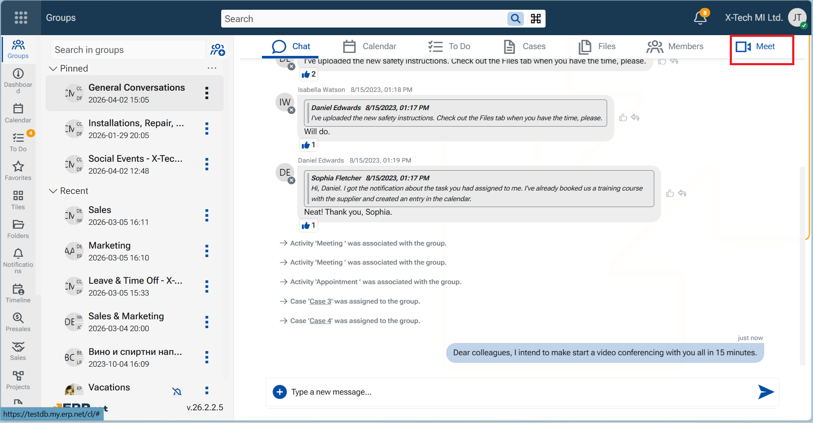
This allows discussions to be started in direct relation to ongoing work, reducing the need to switch between tools and ensuring that communication remains context-aware.
The feature provides a unified video conferencing experience with the following capabilities:
Instant meeting initiation
Any member of a group or participant in a supported record can start a meeting without prior scheduling.Integrated meeting environment
Meetings open in a dedicated video conferencing page and are connected to system notifications and chat.Participation through chat notifications
When a meeting starts, a system message is posted in the related chat, allowing participants to join directly.Audio and video readiness
Camera and microphone are available by default for all participants, enabling immediate interaction.Recording functionality
Meetings can be recorded, with recordings stored and made available for download after the session.Automatic file management
Recordings are saved in the corresponding Files section, with system-generated names based on date and time.
Meet platform
ERP.net has implemented Jitsi As A Service jaas.8x8.vc platform for this feature. The meeting is held within a new browser window. At its end, the browser tab remains until closed by hand.
Getting Started
Start a meeting from a Group
You are the initiating participant
From within the Group, navigate to tab Meet and click on. it
An informative page opens.Click on the button "Start Meeting".
A lobby page opens. It contains all group members.Select the participating members.
The host member - you - is preselected and cannot be unchecked.
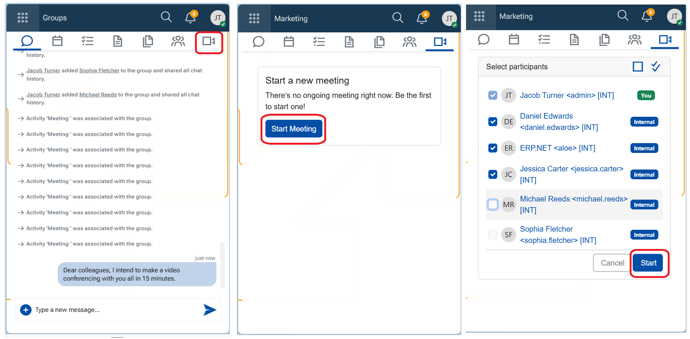
- Click "Start".
The video conferencing page opens and the meeting starts immediately.
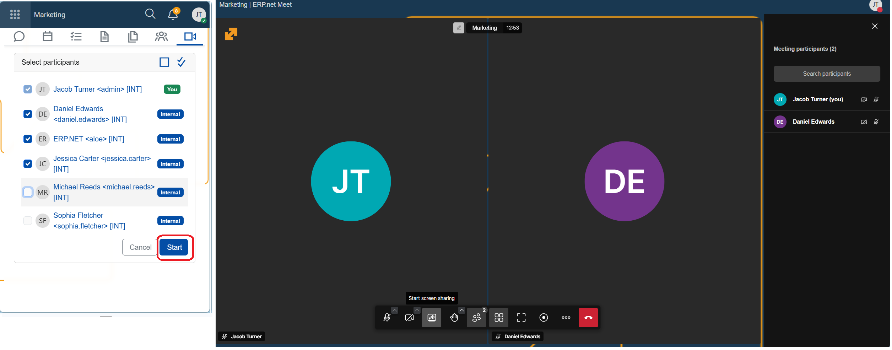
The video conferencing page provides the active meeting environment where participants communicate in real time. It includes standard meeting controls, such as:
- Audio and video management
- Screen or content sharing
- Environment and layout settings
- Meeting recording controls
These controls allow participants to interact, present, and manage the meeting as it progresses.
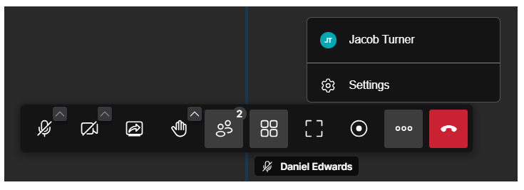
Note
When a meeting is started, the system notifies participants through multiple channels:
🔔 A system comment is posted in the group's chat: "The meeting has started. Click Join meeting to participate.", where "Join meeting" is a link.
🔔 A notification appears in the Notifications panel (Bell icon) and is marked as unread.
🔔 A red toaster pops up in the bottom-right corner of the screen (for 10s).
🔔 A melody is played. It will stop if you click on the red toaster, or after 10 seconds.
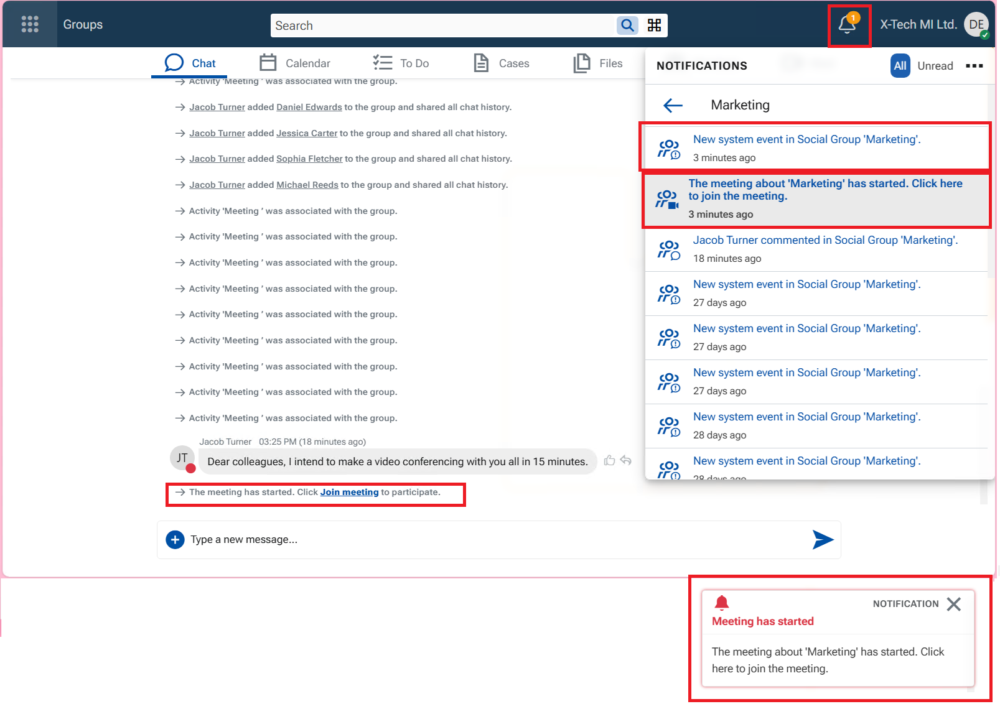
Join a meeting from a Group
You are simply a participant
Variant A - Join an ongoing meeting using the entry points in the NOTE
- Click on the red toaster, or the notification, or the link in the system comment - the system takes you to the lobby page.
- Click Join meeting to enter the ongoing meeting.
Variant B - Join an ongoing meeting from the Group
If you have missed the notifications you can:
- Go to tab Meet
- Click Join meeting to enter the ongoing meeting.
The conferencing page opens, and you can see what is being shared and participate.
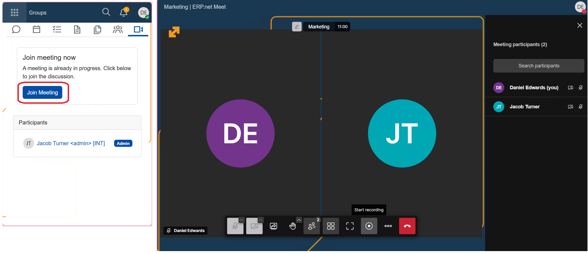
When participants are in a meeting, their user state changes to "Busy".
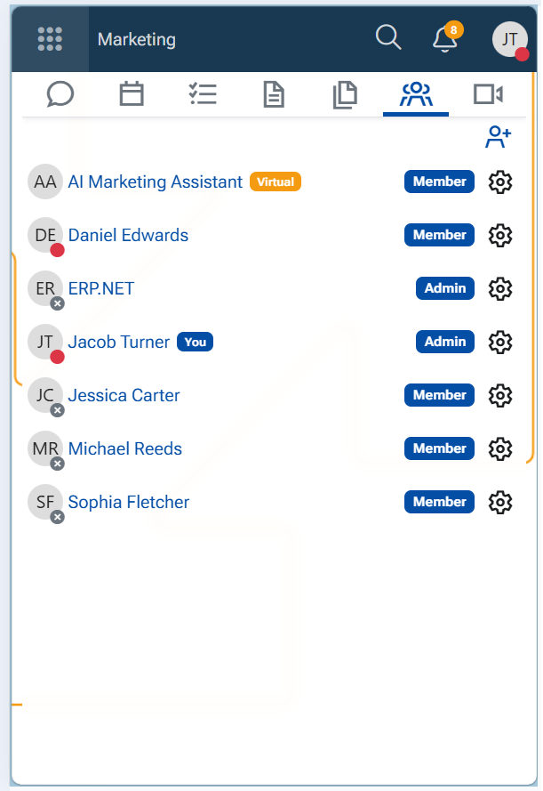
Start a meeting from a record
You can initiate a meeting from the following records:
- Case
- Activity
- Service Activity
- Marketing Activity
- Open the desired record.
- Open the main menu (three vertical dots in the top-right corner of the form).
- Select option Meet.
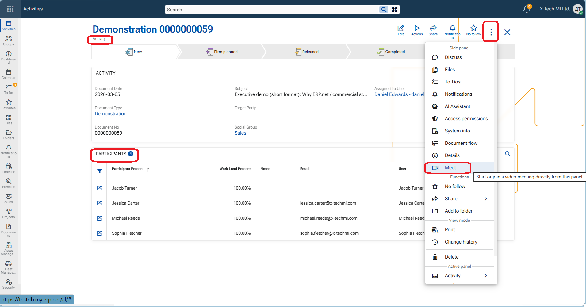
A side panel opens with the Meet initial page - Start a new meeting.
- Click Start meeting.
The meeting lobby page opens and displays the list of potential participants. - Select/deselect participants.
- Click Start.
The video conferencing page opens and the meeting starts.
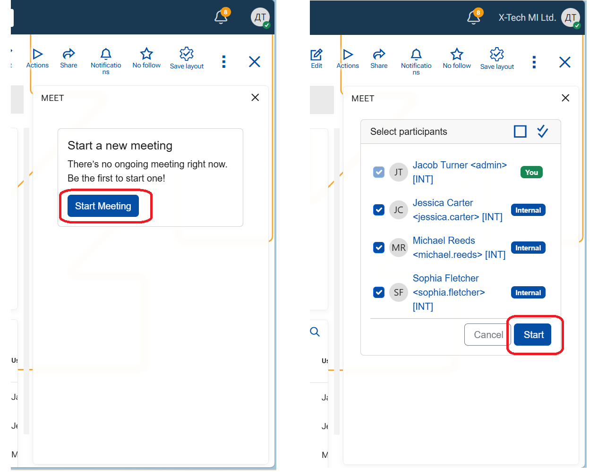
Join a meeting from a record
When a meeting is started, the system notifies participants through the mentioned channels (see Note above). The system message is posted in the related Discuss panel of the record.
From within the record (Case, Activity, Service Activity, or Marketing Activity)
- Join the meeting using any of the available entry points:
- Click Join meeting in the chat message.
- Click on the notification from the Notifications panel.
- Click the red toaster.
- The meeting lobby page opens.
- Click Join meeting to enter the ongoing meeting.
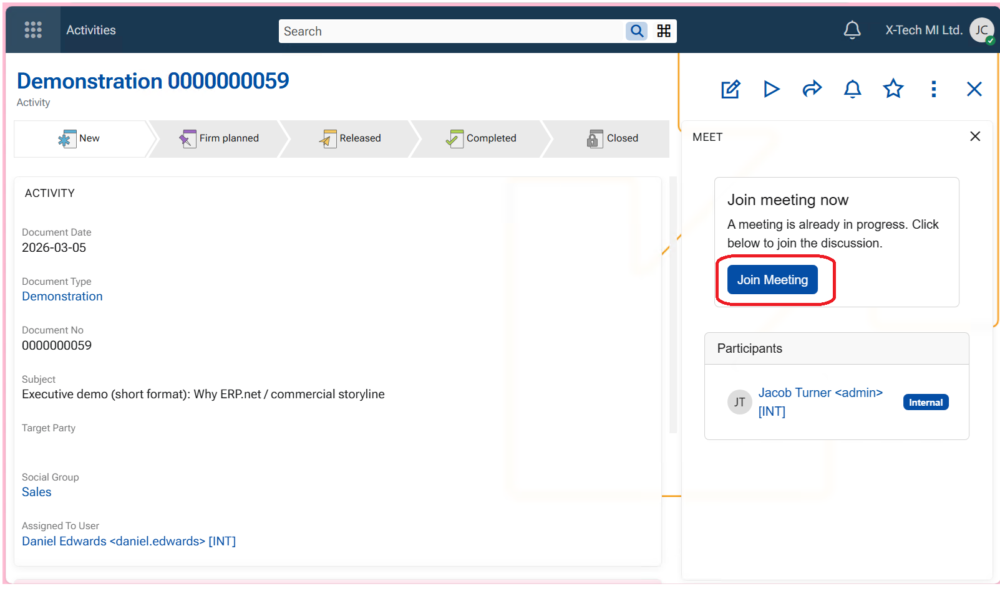
*For rules about Participants, see Configuration.
Stop a meeting
Participants can leave the meeting at any time by pressing the red "End call" button. If only two participants are in the meeting, it ends when either of them leaves.
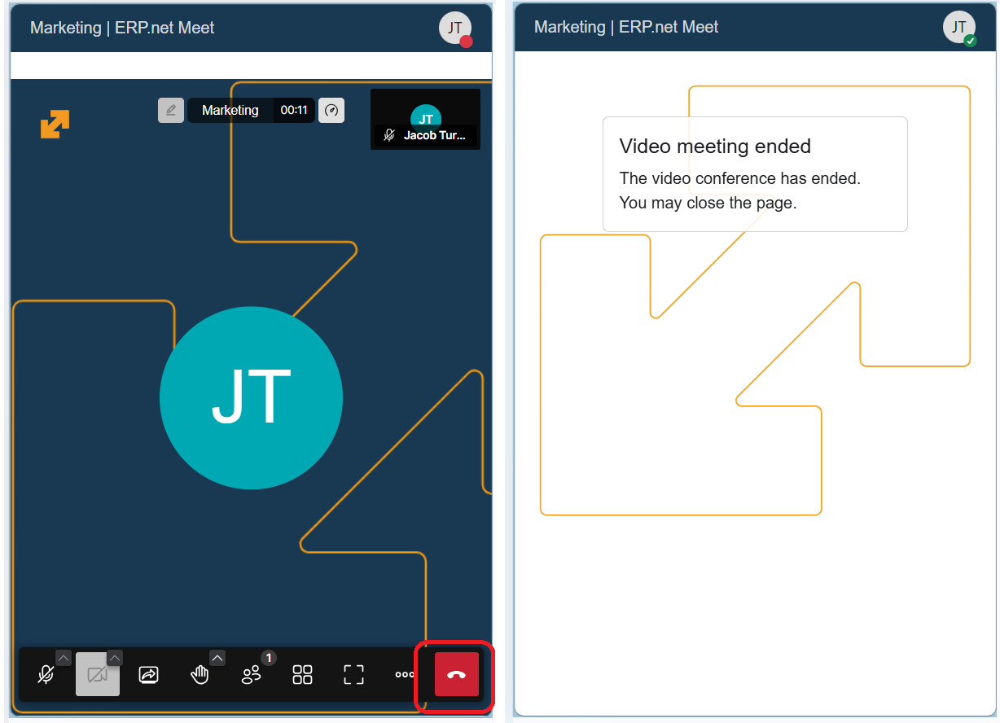
Record a meeting
- In the video conferencing page, locate the recording control - a round button - and click on it.
A confirmation pop-up appears. - Click Start recording.
The system begins recording the meeting.
💡 Two toasters notify that a Recording is being prepared and a Link is generated.
💡 A voice confirms that "Recording is on".
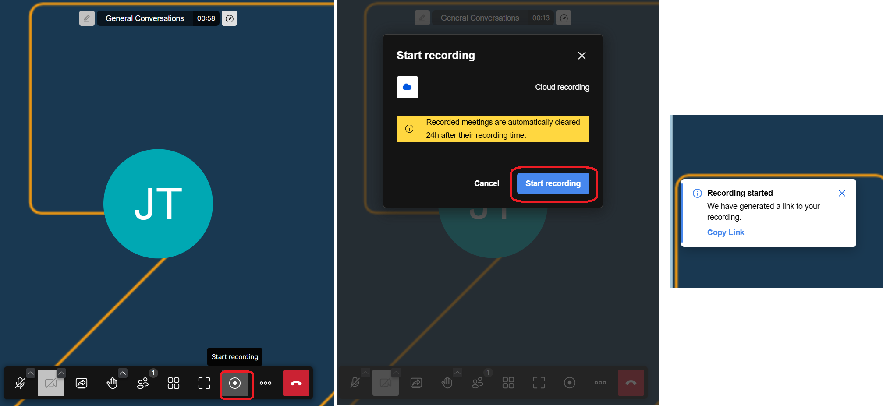
To stop recording, click Stop recording - a square button. Confirm.
💡 A voice confirms that "Recording has stopped".
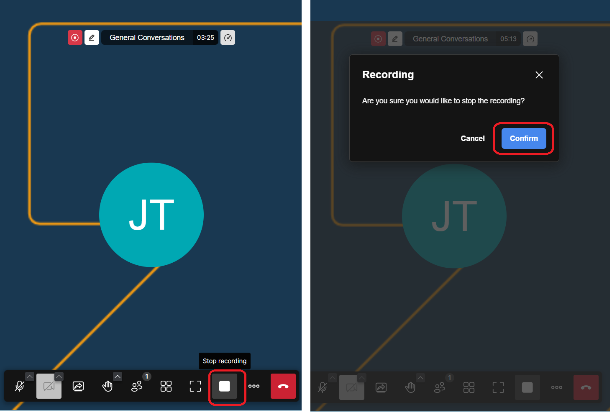
The recording generates as a file, that is actually a URL link. It is stored in tab Files of the Group or the record. The file name includes the exact date and time of the meeting.A system comment announces the upload of the File too.
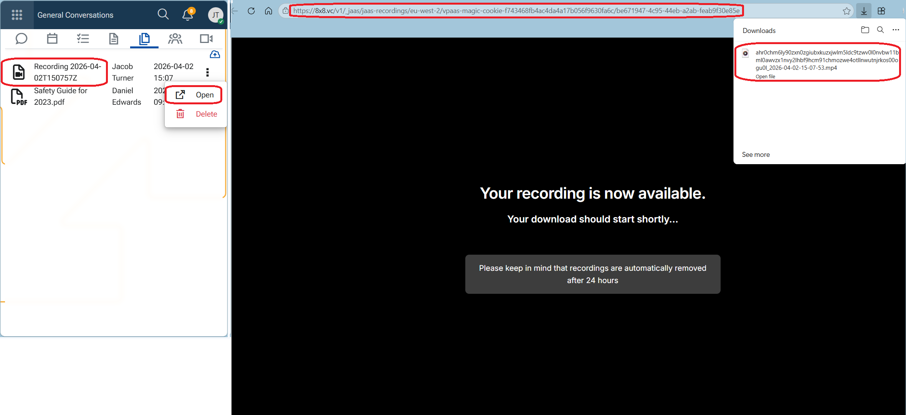
Warning
Recording is available for download for a limited time only - 24h. After this period it is automatically deleted and can no longer be accessed. Make sure to download it immediately after the meeting ends!
Configuration
The availability of video conferencing features is License-based:
X19 – Basic
- Meetings are available for internal users only
- Recording is not available
X20 – Advanced
- Meetings are available for both internal and external users
- Recording is available and can be initiated by internal users
Important
Potential Participants in meetings are determined based on the context of the record.
- A meeting from a Case calls participants who are Tagged at least, or have set higher follow level (Following, Favorite) for the record.
- A meeting from an Activity/Service Activity/Marketing Activity needs users explicitly listed as participants.
- A meeting from a Group needs only its Group Members.